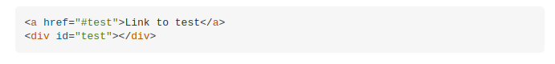

Classes and IDs are two of the most commonly used selectors for styling targeted HTML elements with CSS. Selectors are essentially used to point to different parts (elements) of your HTML document that you want CSS to style in a particular way.
You could be forgiven for thinking that classes and ids can be used interchangeably and produce the same outcome. This is true to an extent, especially when working with just CSS. However the correct use of the two selectors is very important once you start working with a functional programming language such as JavaScript, not to mention the fact that there are a lot of opinions in the tech community around best practices for their use.
Truly understanding the difference between class and id attributes took me longer than I would care to admit.
The penny finally dropped - when I thought inside the box.
Here you can see that I defined a class "box-div" as I wanted any boxes I used in this blog post to be evenly spaced across the page.
I also defined a "magic-box" class (to reflect the wonder and awe I felt when I finally grasped this concept). A class selector could contain any amount of styling choices such as font style and size, background color, positioning etc.
In this case the only styling I wanted for my magic boxes was a delightful moccasin background.
Now let's say, hypothetically, I wanted to create a box SO unique and SO magnificent, that I never wanted it to be replicated again, even by myself, even on my own webpage.....hypothetically....
Also of note but not included in this blog post (I have already spent enough time on this) is the fact that ids can be used to anchor links in HTML. Here is an example I swiped from the internet:
I could find lots of different and sometimes conflicting opinions with regards to best practices when using class and id selectors.
My main takeaways are: